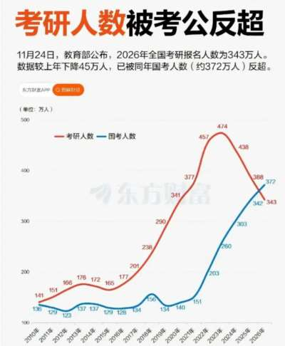

世界苦茶11月26日新闻 | 36条 | 中国在浦东机场刁难一印度公民两国再起争端

中国在浦东机场刁难一印度公民两国再起争端 | 中国研究生考试连续三年报名下降 | 日本研究收紧「归化」条件 | 欧洲内部就专利和数字监管冲突
苦茶数据
美元兑人民币：7.07（昨日7.09，前日7.10）
美元兑日元：156.10（昨日156.82，前日156.68）
上证指数：3879（昨日3880，前日3843)
标普500指数：6765（昨日6705，前日6602）
比特币：87519（昨日88048，前日86714）
布伦特原油：62.72（昨日63.09，前日62.54）
中国新闻
• 中国国安部要求警惕境外游戏“夹带私货”。
中国国安部发文警告境外游戏“夹带私货”，出现将西藏列为英属印度的“核心领土”、将台湾从中国“划分”出去等问题。不过玩家认为，即便官方警告，境外游戏也很难全禁，很多网民本来就通过各种手段跨区下载和玩游戏。中国国安部星期二通过微信公众号发文称，个别境外敌对势力和别有用心之人企图将游戏变为传递歧视、散播政治谣言，甚至是渗透策反的“狩猎场”，威胁国家安全，应予重视。文章举例，有游戏涉及歧视，将中国相关角色设定为阴险狡诈的形象；还有游戏涉及危害中国国家统一、主权和领土完整，例如一款二战模拟游戏将西藏列为英属印度的“核心领土”、还有游戏将台湾从中国“划分”出去等；还有游戏向玩家精准投放“间谍招募”广告。
• 台学者：北京加强推进一中国际法源化。
针对中国大陆国家主席习近平星期一与美国总统特朗普通话，强调“台湾回归中国”是战后国际秩序的重要组成，台湾学者研判，北京正加强将“一个中国原则”与国际法法源相联结；若结合近期扩张长臂管辖等案例，更可看见北京正在建构符合“一个中国“的世界法原则。日本首相高市早苗11月初发表“台湾有事”相关言论，引发中日关系紧张，北京方面多次援引《开罗宣言》等历史文件，主张对台主权不容干涉。习近平星期一与特朗普通话时也特别强调，台湾回归中国是战后国际秩序重要组成部分。随着北京强化对台法律战，近期台湾不少高校与学术单位接连举办相关会议，分析相关情势。
• 中国一家民营公司开始低成本量产7马赫导弹。
成本降90%的马赫7高超音速导弹 北京凌空天行科技周二在其官方社交媒体账号发布视频，展示了YKJ-1000高超音速导弹的飞行画面及其在沙漠试验场命中实弹目标的情况。公司一位代表称，该导弹已进入量产，成本仅为传统导弹的十分之一。该导弹射程为500至1300公里，速度可达马赫5至7，维持推进飞行约六分钟。其发射装置被设计成类似标准集装箱的外形。视频记录中，导弹由卡车运输至沙漠发射点，自动从四角展开稳定支撑。动画画面显示，导弹可在飞行中识别目标并自主规避威胁，暗示其可能绕过航母打击群或防空系统等防御屏障。
• 印度籍女子Prema Wangjom Thongdok称被中国海关刁难骚扰。
她自伦敦赴大阪旅行，11月21日在上海浦东转机，通过e道过境后，在安检排队时中方边检追出将她带走，原因是她护照登载出生地为阿鲁纳恰尔邦（即藏南地区），中方认其为无效旅行证件。有官员对她笑称“你应该申请中国护照”。其后她在边检与东航转机柜台之间被来回推诿，没有食物，机场网络也无法使用WhatsApp，辗转联系到印度驻沪领事馆，印方官员到场，她才在被扣18小时后得以乘机离境。她说，去年也曾在上海浦东机场过境，其时没有遇阻。
• 中国为对在争议边境地区出生的印度女子的护照检查辩护。
中国否认因“无效”护照骚扰出生于有争议边界地区的印度籍女子 外交部称核查程序合法，旅客称在上海被拘留18小时以上 北京否认中国当局曾拘留并骚扰一名出生于有争议边界地区的印度公民。该名旅客称自己在经停上海时被拘留超过18小时。周日，一名自称为Pem Wang Thongdok的女子在社交媒体上表示，周五她在上海机场被“强制扣留”。她称当时从伦敦经上海前往日本。自1962年那场短暂但血腥的边界战争以来，这对拥核邻国实际上被长约3200公里的实际控制线分隔。当前阿鲁纳恰尔邦与西藏之间的边界基于英殖民时期的“麦克马洪线”，中国从未承认该线。北京称麦克马洪线以南的部分地区属于其西藏自治区，称之为藏南。
• 中国比特币挖矿反弹，无视2021年禁令。
尽管四年前已被取缔，矿工和行业数据称，比特币挖矿在中国正在悄然复苏，个人和企业矿工在一些能源充足的省份利用廉价电力和数据中心热潮捞利。矿机制造商嘉楠科技在中国销量快速回升，也证实了这一挖矿回暖趋势，这可能为全球市值最大的加密货币提供需求和价格支撑。“很多能源无法从新疆输送出去，所以用挖矿的方式消费掉，”姓王的一位人士说。他说：“新的矿场项目正在建设中。我能说的是，人们会在电价便宜的地方进行挖矿。
• 前编辑胡锡进呼吁官方媒体在批评日本时有所克制。
前《环球时报》总编辑呼吁官方媒体妥善管理公众预期，批评日本时避免使用“与实际情况不符的激烈措辞”。胡锡进表示，官方账号应当“力求用词精准、传递事实信息”，从而“引导公众预期，防止居民产生误判”。他在周日的微博中警告称，“夸大其词”和“表面化”的信息只会适得其反。“对日斗争很可能是长期的，讲究韧性与可持续性，我们需要保持中国社会的决心、理性与团结，”胡锡进说。
• 中国硕士研究生考试报名人数连续三年下降。
中国硕士研究生招生考试报名人数连续三年下降。有分析认为，读研究所的性价比和回报率下降，以及学生选择更趋理性，都是促使报考人数减少的因素之一。中国教育部星期一公布，2026年全国硕士研究生报名人数为343万，比2025年的388万减少45万。中国考研报名人数在2023年达到474万的高点后持续下滑，2024年降至438万，2025年进一步降至388万，十年来首次跌破400万大关。《每日经济新闻》报道称，伴随研究生规模的显着增长，研究生学历不再是稀缺资源。在一些人看来，用三年甚至更长时间去取得一张硕士文凭，未必比大学毕业开始积累工作经验的性价比更高。
• 北京进入呼吸道传染病高发期 多种感冒药销量飙升。
随着近期中国多个地区气温下降，流感病毒进入活跃期，北京进入呼吸道传染病高发期，多种感冒药销量飙升。据央广网星期二报道，11月以来中国全国流感活动快速上升，北京已迈入呼吸道传染病高发期，北京儿童医院内科门诊里挤满等候就诊的家长和孩子。有家长表示，听说如果得了甲型流感，24小时内吃一粒奥司他韦就管用，导致“现在好多人抢着买，就怕买不着。” 美团买药平台数据显示，11月以来北京甲乙型流感特效药环比增长超130%，其中速福达增长超110%，磷酸奥司他韦颗粒增长超85%。报道称，线下药店抗流感药物库存充足。但药房工作人员提醒，奥司他韦是处方药，并非普通感冒药，仅对流感有效，不能治疗普通感冒。
• 美国财政部长称特朗普可能明年出席在中国举行的APEC会议。
特朗普瞄准可能在APEC与习近平会面 随着外交进入高强度阶段 深圳APEC站可能成为四次面对面会谈之一，双方在关键政治年到来前释放关系改善信号。美国财政部长斯科特·贝森特周二表示，唐纳德·特朗普可能会在2026年11月前往中国，参加亚太经合组织峰会，这是未来一年美中领导人可能举行的四次面对面会晤之一。与特朗普总统任期内的许多特征一样，这种程度的接触将是前所未有的，仅可与特朗普在2017年首任期内与习近平举行的四次会面相媲美。贝森特在美国市场开盘前不久于CNBC表示，美中将永远是竞争对手，但关系正在改善。
印太新闻
• 卓荣泰回应北京：台湾人没有回归选项。
中国国家主席习近平星期一与美国总统特朗普通电话时强调，台湾回归中国大陆是战后国际秩序重要组成部分。台湾民进党政府星期二反驳称，中国大陆的不实叙事，无法改变“中华民国”和中华人民共和国互不隶属的事实。台湾行政院长卓荣泰更在立法院强调，“中华民国台湾”是一个完完全全的主权独立的国家，“2300万国人没有回归的选项”。这是民进党政府首长近年就拒统发表的最强烈讲话。自从1949年台海两岸分治以来，大陆始终坚持两岸同属“一个中国”，终将统一；台湾的本土意识则一直提升，对大陆的认同与“台独意识”此消彼长。学者分析指出，日本首相高市早苗发表“台湾有事”造成中日关系陷于近年谷底。
• 人权组织抨击特朗普政府在缅甸内战肆虐之际取消对缅甸的遣返保护。
人权组织抨击特朗普政府在缅甸内战硝烟弥漫之际终止遣返保护 曼谷——人权组织周二抨击特朗普政府决定终止对缅甸公民的受保护身份，理由是该国在“治理和稳定方面取得了显着进展”，尽管缅甸仍深陷血腥内战，其军政府首脑可能面临联合国的战争罪指控。国土安全部长克里斯蒂·诺姆周一在宣布结束对缅甸公民的临时遣返保护时，援引了军方计划在12月举行“自由公正的选举”和“成功的停火协议”等因素作为其决定的理由。“缅甸的局势已有所改善，足以让缅甸公民安全回国，”她在一份声明中说。高级将领敏昂莱领导的军方在2021年从民选的昂山素季手中夺取了政权，并试图通过即将到来的选举为其政权增加一层国际合法性。
• 日本将探讨收紧获取日本国籍的「归化」条件。
日本政府将探讨收紧获取日本国籍的「归化」条件。其中一个方案是通过调整审查执行方式等，把归化所需居住年限从现行的「5年以上」进行延长。目前，归化所需的居住年限比获得「永住许可」更短。目前日本正针对2026年1月将汇总的外国人政策基本方针细化具体措施。日本首相高市早苗已指示法务相平口洋推进相关事宜。讨论课题的核心是居住年限相关条件。当前，归化需满足在日本居住5年以上的要求。这一期限比永住许可的取得条件更短。
• 日本要将AI、核融合等6领域指定为国家战略技术。
日本要将AI、核融合等6个领域指定为国家战略技术 2025/11/25 日本政府将把经济安全保障方面至关重要的技术指定为「国家战略技术」。将指定人工智慧、生物、核融合等6个领域，重点分配研究预算、采取税收优惠措施。此举意在针对国际竞争激烈的技术领域促进投资，提供从创业到实用化的广泛支援。高市早苗内阁把实现「新技术立国」视为支柱政策之一。此次的措施是「增长·危机管理投资」的一环，这种投资通过由日本政府对经济增长和危机管理所必需的领域提供支援，来带动企业及研究机构的民间投资。
• 美国与东南亚贸易协定含毒丸条款。
美国川普总统与马来西亚总理安华在东盟相关首脑会议期间签署了双边贸易协定，围绕美国与马来西亚签署的贸易协定，马来西亚国内的反对声升高。原因是此项协定含有如果马来西亚与其他国家签署威胁美国利益或安全的协定，美国可以单方面撕毁该贸易协定的条款。有人批评称这是侵犯主权的行为，专家指出这是一项「毒丸条款」。此项贸易协定虽然未指名具体国家，但明显是针对中国。美国与柬埔寨也签署了类似协定。今后与泰国、越南谈判时可能也会列入该条款。东南亚有很多国家奉行中立外交，美国此举被认为意在阻碍这些国家与中国接近。
科技新闻
• 中国首次应急发射飞船前往天宫空间站。
目前，那里有三名航天员，但没有安全可用的飞船将其送回地球。起因是，之前的一艘神舟二十号飞船发现舷窗玻璃有细裂纹。周二，中国首次应急发射神舟二十二号飞船。本月初，中国空间站的神舟二十号载人飞船在轨道受损。神舟二十二号飞船为无人状态。周二中午12时11分，在酒泉卫星发射基地由长征2F火箭发射升空。中国央视发布的视频显示，火箭发射升空，飞船进入轨道，背景可看到地球。神舟二十二号飞船将前往中国常驻航天员的天宫空间站。目前，那里有三名常驻航天员，但并无在紧急情况下可将其安全送回地球的飞船。
• 欧洲议会投票决定起诉欧盟委员会，指控其扼杀专利法案。
欧洲议会议员周二投票决定对欧盟委员会就其搁置一项关于专利许可监管的备受争议法案采取法律行动。在本月早些时候已向欧洲联盟法院提起诉讼之后，今天议员以334票赞成、294票反对、11票弃权通过了继续追究法律程序。该项标准必要专利法规在专利持有者——包括诺基亚、爱立信、高通和华为——与使用其技术的被许可方之间，从手机制造商到汽车制造商，激起了一场激烈的游说大战。
• 谷歌为遵守欧盟“大科技”规则进行意大利式改造。
欧盟委员会或许是欧盟“科技巨头规则”的唯一执法者，但谷歌与意大利监管机构达成的和解表明，各成员国监管机构仍有相当空间推动相关议程。意大利竞争局周五披露，已与这家美国搜索巨头达成和解，要求其修改用户在同意共享数据时的条款和条件设计。该调查指控这家科技巨头通过“具有误导性和侵扰性”的商业做法，诱导用户将地图和搜索等服务关联在一起，从而违反意大利消费者保护法规；这类行为也属于欧盟《数字市场法》所规制的范围。
• X 推出新功能，揭露境外亲MAGA账号。
周末，X 推出的一项新功能显示，若干拥有大量追随者的亲特朗普账号并不位于美国，尽管其内容和部分简介暗示相反。在 X 账号档案中，点击账号的创建日期会显示该账号的所在国家或地区。用户可以切换隐私按钮，仅显示地区而非具体国家。CNN 无法独立核实这些账号的位置。这一发现不仅凸显了许多外国行为体利用社交媒体试图影响美国社会，也表明此类影响尝试未来可能会增长——尤其是在账号为争取用户参与度而有强烈经济动机的情况下。X 产品负责人 Nikita Bier 发文称，这一更改“是保护全球公共广场完整性的一个重要第一步。我们计划为用户提供更多方式，以验证他们在 X 上看到内容的真实性。
• Meta正考虑斥资数十亿美元购买谷歌TPU。
Meta平台公司正在恰谈斥资数十亿美元购买谷歌的人工智能芯片，这表明这家互联网搜索巨头在打造与业内最畅销的人工智能加速器竞争的产品方面取得了进展。知情人士表示，Meta 正讨论于2027年在其数据中心使用这些芯片，即张量处理单元(TPU)。Meta也可能在明年从谷歌云部门租用芯片。这项协议将有助于确立TPU作为英伟达芯片的替代品，英伟达芯片是需要算力来开发和运行人工智能平台的大型科技公司和初创企业的黄金标准。此前，谷歌已达成一项协议，向Anthropic供应多达100万颗TPU芯片。尽管如此，英伟达仍在市场上占据主导地位。
• 特斯拉高管辟谣“北美供应链去中国化”。
针对近期媒体报道称“特斯拉要求供应商在北美制造环节排除中国零部件”一事，特斯拉公司全球副总裁陶琳今日通过社交平台进行了公开回应。陶琳明确表示，特斯拉在全球各地的生产基地对供应商的选择均采用统一标准，供应商的原产国或地理位置并不构成排除性条件。陶琳在回应中强调，无论是针对美国、中国还是欧洲市场，特斯拉的供应链策略核心始终围绕质量、总成本、技术能力成熟度以及长期供货连续性展开。她透露，得益于供应链的深度整合，目前特斯拉上海超级工厂生产的Model 3和Model Y零部件本土化率已超过95%，这直接促成了相关车型在中国市场具有竞争力的价格体系。（翻评：现在商业企业都没法说实话了。）
经济新闻
• 大众称在中国制造电动车将使开发成本将减半，试图重新夺回市场份额。
据金融时报报道，大众表示公司在中国生产一辆完全本地制造的电动车，成本仅为在其他地方的一半。这家德国汽车制造商正努力重新夺回在全球最大市场中的份额。作为欧洲最大的汽车制造商，大众周二表示，随着在中国进行了一系列投资，公司首次能够在德国以外开发新车型，包括测试和部署诸如辅助驾驶等新技术。大众计划未来五年内在中国推出约30款电动车，努力推进本地化研发。公司表示，与2023年在德国生产电动车的成本相比，中国部分车型的生产成本降低了多达50%。这种降本得益于供应链效率提升，包括电池采购优化、更短的开发周期以及更低的劳动力成本。大众已在中国东部的合肥投资数十亿欧元，建设创新中心。
• 惠普将在2028年前裁员约6000人，并加大人工智能投入。
惠普公司周二表示，计划通过精简运营并采用人工智能以加速产品开发、提升客户满意度和提高生产力，到2028财年将在全球裁员4,000至6,000名员工。首席执行官恩里克·洛雷斯在一次媒体简报电话中表示，产品开发、内部运营和客户支持相关团队将受到此次裁员影响。洛雷斯补充说，“我们预计这一举措将在三年内实现10亿美元的年化节省。” 该公司在2月已根据此前宣布的重组计划额外裁员1,000至2,000人。面向人工智能的个人电脑外部需求持续上升，截至10月31日止的第四财季，此类PC占惠普出货量的比例已超过30%。
• 消费者信心下滑，美国人对高昂成本和疲软的就业增长日益担忧。
在政府停摆、招聘乏力和通胀顽固的影响下，美国消费者对经济的信心在11月明显下降。会议委员会周二表示，其消费者信心指数从经上调后的10月95.5降至11月的88.7，为4月以来的最低值——当时总统唐纳德·特朗普宣布大规模关税导致股市暴跌。调查显示，美国人对高成本和就业增长乏力的担忧日益加重，且对劳动力市场的感知正在恶化。会议委员会表示，信心下降可能给特朗普及国会中的共和党人带来政治麻烦，因为对经济的悲观看法在各政治派别中均有体现，独立选民中尤为明显。
• 欧盟部长们争取特朗普支持共同对华政策，尽管公众的怀疑情绪日益加剧。
欧盟部长向特朗普示好，寻求就中国政策达成合作，尽管公众怀疑情绪日增 欧洲官员游说美方共同“对抗”北京，同时一项德国民调显示对华谨慎 柏林柯尔伯基金会的一项民调显示，德国人对特朗普执政下的美国持谨慎态度，73%的受访者认为两国关系状况糟糕，而一年前有74%的人认为关系良好。尽管约三分之一的德国人对中国在世界上日益增长的影响表示担忧，但有80%的受访者对中国构成的经济威胁表示担忧，即便他们并不认为美国是应对这一威胁的可靠伙伴。尽管如此，随着各方努力阻止特朗普与俄罗斯达成可能削弱欧洲安全的协议，欧盟政府希望通过提出与美国共同应对北京的合作，能够吸引他的注意。
• 英国不受欢迎的政府正筹备一份风险极高的预算，并寄望于实现经济增长。
英国不受欢迎的政府准备推出高风险预算并寄望于增长 英国不受欢迎的政府准备推出高风险预算并寄望于增长 伦敦——在去年以压倒性优势当选后，英国工党政府推出了一份被宣称为一次性增税措施的预算，旨在修复公共财政、降低债务、缓解生活成本并刺激经济增长。一年过去了，通胀依然顽固偏高，政府举借资金增加，经济停滞不前。定于周三公布的年度预算预计将通过更多增税来追求同一难以捉摸的经济繁荣。英国工商联合会首席执行官雷恩·牛顿-史密斯周一表示，“感觉不像是在前进，倒更像陷在《土拨鼠之日》里。” 不只是企业对现状担忧。鉴于政府在民调中持续处于糟糕状态，一些工党议员正考虑曾被认为难以想象的做法。
俄乌战争
• 乌克兰称已就和平计划与美国达成“谅解”，特朗普称其特使将会见普京。
乌克兰表示已与美国就旨在结束与俄罗斯战争的和平协议“达成共识”。该提议基于上周美国向基辅提出的28点计划，美方与乌方官员在日内瓦周末会谈中对该计划进行了修改。美国总统唐纳德·特朗普在社交媒体上表示，原计划“已被微调，双方均提出了额外意见”。他补充说：“我已指示我的特使史蒂夫·威特科夫前往莫斯科与普京总统会面，同时陆军部长丹·德里斯科尔将与乌克兰方面会谈。”泽连斯基的幕僚长称，预计德里斯科尔本周将访问基辅。克里姆林宫此前表示尚未就新草案与俄罗斯协商——并警告可能不会接受对上周计划的修改。
• 特朗普的和平计划暂时帮助泽连斯基将乌克兰最大的腐败丑闻搁置一旁。
特朗普的和平计划在重大腐败丑闻中为泽连斯基减压 乌克兰总统弗拉基米尔·泽连斯基与其幕僚长安德里·耶尔马克在美国纽约联合国总部，摄于2025年9月23日。当本月早些时候乌克兰总统弗拉基米尔·泽连斯基同时陷入大规模腐败丑闻和一项备受争议的和平计划时，许多人认为他的处境看起来岌岌可危、十分被动。但实际上，这场外交政策危机帮助泽连斯基将国内争议边缘化。他将自己塑造成乌克兰国家利益的捍卫者，同时就可能迫使乌克兰接受俄罗斯条件的美国最后通牒举行会谈。结果，外交议程盖过了泽连斯基任内最大的腐败丑闻，使他迄今得以仅通过象征性举措——如解雇两名被牵涉进贪腐案的部长——来应对。
• 欧洲议会就反克里姆林宫的“民主盾牌”猛烈抨击欧盟委员会。
本周，欧洲议会议员纷纷抨击欧盟执行机构提出的“民主盾”计划，该倡议旨在加强欧盟防范俄罗斯破坏、干预选举以及网络和假信息行动的能力。荷兰绿党议员金·范·斯帕伦塔克周一晚在一个委员会会议上表示，委员会的计划“更像是一个欧洲邻里守望微信群”。周二，欧盟司法专员迈克尔·麦格拉斯在全体议会会议上遭到更强烈的批评，中间派和偏左议员指责该计划存在诸多漏洞，极右翼议员则警告称布鲁塞尔正在自己打造一套宣传机器。
• 美俄代表在阿布扎比会谈。
美国代表在阿联酋与俄罗斯代表团谈判，焦点是美国关于结束乌克兰战争的计划。与此同时，乌克兰官员称，总统泽连斯基本月将前往华盛顿与特朗普会晤。据媒体报道，美国政府高级代表目前正在阿布扎比与俄罗斯代表团进行和谈。美国媒体CBS、CNN以及《华尔街日报》一致报道称，美国陆军部长德里斯科尔自周一起与俄罗斯政府代表举行会谈。乌克兰及欧洲：日内瓦谈判“取得进展” 目前，乌克兰及其欧洲盟国与美国正在进行紧锣密鼓的谈判，以便确定一份可能的和平协议的基础。
• 马克龙称，法、英、土部队可在和平协议达成后立刻部署到乌克兰。
法国总统马克龙在11月25日出版于法国RTL电台的一次采访中表示，在和平协议签署当天，法国、英国或土耳其的士兵可能会作为“安抚部队”被派往乌克兰。马克龙在安哥拉举行的欧盟—非盟峰会上说，隶属于“有志者联盟”的部队将被部署到基辅或敖德萨等后方地点，提供安全和训练服务，从而成为乌克兰战后保障措施之一。今年早些时候由法国和英国牵头成立的该联盟，旨在作为潜在和平协议的一部分，为乌克兰提供安全保障，以加强其对抗未来任何俄方侵略的能力。马克龙表示，驻乌部署不会在北约框架内进行，而是作为一个“政府间联盟”实施。“大约有20个国家已经表示愿意积极参与，可能在空中、陆地或海上提供支持，”法国总统补充道。
• 专家警告：特朗普的和平计划不仅削弱乌克兰的安全，也危及欧洲的安全。
美国总统唐纳德·特朗普提出的结束俄乌战争计划被批评为实际上强加了克里姆林宫要求乌克兰投降的条件。但分析人士和外交官认为，该计划也对欧洲的安全架构构成直接威胁。该提案要求乌克兰割让领土、限制其结盟权并大幅削减军力——这些条件远比先前谈判轮次中讨论的任何建议更为严苛。该计划对欧洲安全的基石构成重创——例如法治，主权国家加入盟约的权利以及禁止以武力改变边界的原则。
世界新闻
• 博索纳罗被下令开始服27年监禁，因策划巴西政变。
巴西最高法院下令博索纳罗开始服27年刑期，因策划政变 巴西最高法院下令右翼前总统雅伊尔·博索纳罗开始执行他因在败选后策划政变而被判的27年零3个月徒刑。法官亚历山大·德莫赖斯周二裁定此案已进入终审阶段，不得再提出上诉。现年70岁的博索纳罗被认定领导一场阴谋，目的是在他于2022年大选中败给左翼对手路易斯·伊纳西奥·卢拉·达席尔瓦后继续掌权。他将开始在首都巴西利亚的联邦警察监房服刑，自上周六起他被认为有潜逃风险并被撤销居家软禁后一直被关押于此。法庭文件显示，在周日的一次听证会上，博索纳罗承认曾试图用烙铁拆卸脚踝监视器，直到“清醒过来”。他表示并无逃跑意图。
• 参议员马克·凯利就五角大楼的调查作出回应。
亚利桑那州民主党参议员马克·凯利表示，特朗普和赫格塞思“不懂宪法”。凯利在接受NPR采访时说，在他与其他民主党议员发布一段提醒现役军人无需服从非法命令的视频后，如果要对他进行军事法庭审判，“这根本说不通”。国防部周一宣布对凯利——一名退役美国海军战斗机飞行员——就其出现在该视频中可能违反军事法律一事展开调查。该视频发布之际，围绕特朗普政府向美国城市部署国民警卫队的法律问题不断浮现。白宫随后收回了总统称参议员视频为“颠覆性行为，处以死刑”的表述，但凯利在接受《全面考虑》采访时表示，他认为特朗普在“宣称对宪法的忠诚应被判处死刑”。
• 特朗普会晤时要求沙特王储推进和以色列关系正常化，因以色列反对两国方案被拒绝。
据Axios报道，上周，特朗普与沙特王储穆罕默德·本·萨勒曼的会面，因讨论沙特是否加入《亚伯拉罕协议》并与以色列实现关系正常化而气氛紧张。加沙战争结束后，特朗普希望这次与MBS的会面，能够推动沙特与以色列关系正常化取得突破。两人在公开场合相互称赞，未表现出分歧，但闭门会议中的部分内容却颇为紧张。官员透露，特朗普对MBS的反应感到失望。会前，白宫官员曾告知王储，特朗普期待在沙特与以色列关系正常化方面取得进展。据美国官员称，在11月18日的会谈中，是特朗普主动提出了这个话题，并强烈要求MBS加入《亚伯拉罕协议》。《亚伯拉罕协议》于2020年签署，旨在推动以色列与多个阿拉伯国家关系正常化。
• 梵蒂冈以一份赞扬一夫一妻制婚姻的文件回应对一夫多妻制表示关切的非洲主教们。
梵蒂冈周二重申了男女一夫一妻婚姻的价值，回应了非洲主教们关于其信众中存在的一夫多妻现象的关切。梵蒂冈教义办公室发布的文件指出，天主教会坚持婚姻不可解除、作为配偶之间终生结合的立场有充分的文献依据。但文件也表示，教会关于一夫一妻婚姻独特性和专属性的立场则不为人所熟知。近年来，在梵蒂冈举行的主教会议以及主教团体的访问中，非洲代表常常抱怨其辖区内普遍存在一夫多妻现象，并请求梵蒂冈提供指导。名为《合成一体：颂扬一夫一妻》的文件为他们提供了一份教义性文本，追溯了圣经，诗歌，基督教神学与哲学。